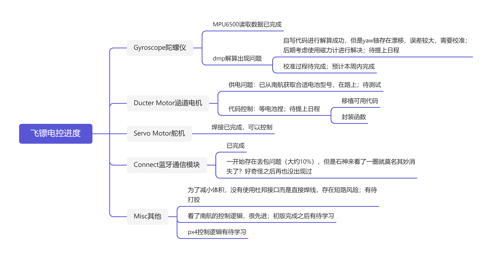
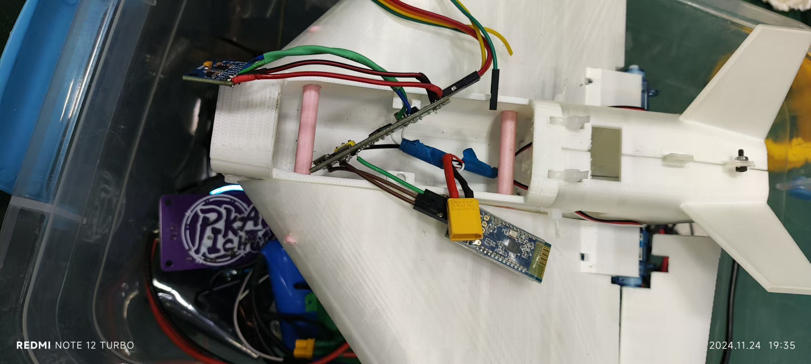
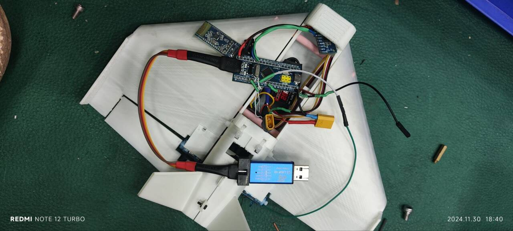
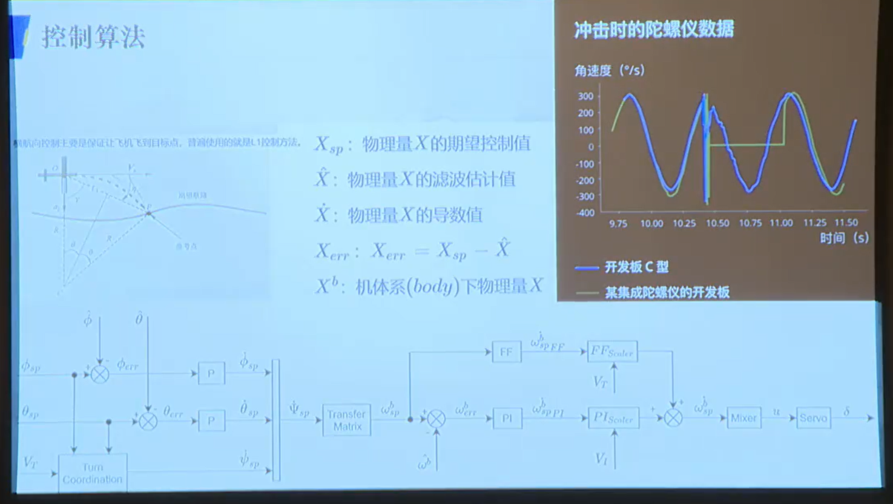
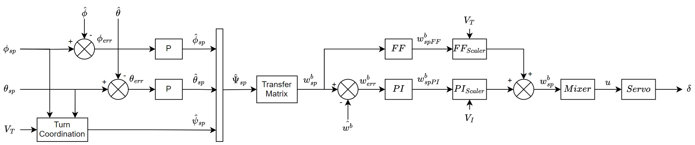

RoboMaster福建师范大学2025赛季 飞镖组开发日志
本篇文章用于记录飞镖组开发日志，便于后人学习
因为也不是什么很珍贵的东西，所以没有上锁，希望其他队伍看到后能指点一二
此前的进度2024.11.24
版本：0.4


硬件选型
1 | 主控：STM32f103c6t6 |
对于陀螺仪部分
- 使用mpu6500读取三个方向的速度和加速度
- 自写函数进行dmp解算获得pitch yaw roll，但是yaw会有累计偏转
- 解决yaw偏转（待解决）
对于通信部分
- 使用蓝牙模块进行串口通信
- 只有发送
对于舵机
- 转幅对应的pwm波为50-250（具体见配置和代码）
对于电池
- 小心使用！小心使用！小心使用！！！
对于涵道
- 三根线分别接电调的三个香蕉头
对于电调
- xt30头接2s供电
- 杜邦头红线接单片机5V，黑线接地，白线为pwm波，范围为500-1000（具体见配置）
对于视觉
- 暂无
UPD2024.11.28
版本：0.5
陀螺仪问题已解决，直接用ai写的dmp解算并且甚至没有很大的零漂！（大雾）
至少确实能用了，而且一点点的零漂不会太影响镖体（但愿）
下一阶段开始把涵道驱动模块移植到这块焊的乱七八糟的板子上（大雾
但是移植过程中又不转了，这段时间二分查找一下bug，然后周六上午和视觉联调
UPD2024.11.30
版本：0.6
已成功和视觉组联调，使用星瞳openMV接收数据成功，存在少量丢包
此版本可以通过视觉参数来返回给舵机（模式3）
舵机模块今天断线了，测试版demo很容易断线，需要谨慎使用，开始找人画板（

UPD2024.12.05
版本：0.7
新增pid控制舵面
改为线性控制，应该更平滑一点
周末测一下
UPD2024.12.10
发现舵面不需要pid（大雾），抖来抖去是因为视觉传过来的数据有丢，计划写个校验
今天先把环境配好（雾）
UPD2024.12.15
版本：0.8
问了一下视觉组的学长，学习了一下其他兵种的先进经验
加了个头和尾，然后直接读很多数据（视觉发送比电控接收快很多）
直接从字符串里取数据即可
通信问题基本解决
之后需要干的，就是依次修改接收窗口，优化数据正确率，然后就是想想飞控该怎么写了
UPD2024.12.19
数据通信延迟太高（错误的数据太多了）
今天想了个办法，直接发hex，这样可以减少30%的通信数据，延迟大大减小
但是几秒钟可能就会有一个数据出错
下一阶段计划改为一位起始位，一位终止位和一位校验位
如果直接用可见ascll，还可以再减少一位（大雾
UPD2024.12.25
南航开源了机械图纸，该跳出来看了
控制算法没有开源，不过据说比较简单，然后重新翻青工会，找到了这个控制算法

UPD2024.12.26
这两天研究了一下控制算法，然后自己重画了一遍这张图

学习了一下，大概思路和简单过程代码有了
不过自己写的dmp解算不包含角速度，这两天需要加上这个
预计元旦之前吧
UPD2024.12.30
这几天在预习期末考试就没有推进度
然后为了应对中期，设置了个临时task
待解决问题
- 涵道
- 驱动不稳定
- 无法移植
- 不知道本质波形函数
- 视觉
- 传输有误 -> 压画质
UPD2025.01.03
这几天大概每天投入一个小时左右，都有进度，但是没写~
今天比较飞跃性的是，把视觉出错的问题解决了
然后涵道也会驱动了，只不过不知道为什么用Freerots驱动不了
UPD2025.02.18
假期进度搁置了
今天把飞控算法基本完成了，今天晚上去拿摄像头，明天测试
.gif)
.gif)
.gif)
.gif)
.gif)
.gif)
.gif)
.gif)
.gif)
.gif)
.gif)